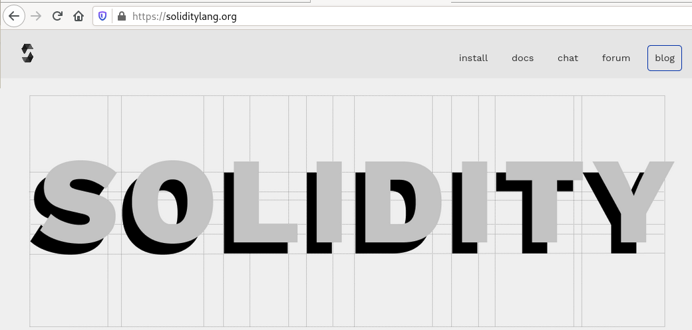

<!doctype html>
<html>
	<head>
		<meta charset="utf-8">
		<meta name="viewport" content="width=device-width, initial-scale=1.0, maximum-scale=1.0, user-scalable=no">

		<title>Solidity in 2021</title>

		<meta name="author" content="Christian Reitwiessner">

		<link rel="stylesheet" href="../reveal.js-4.1.3/dist/reset.css">
		<link rel="stylesheet" href="../reveal.js-4.1.3/dist/reveal.css">
		<link rel="stylesheet" href="../reveal.js-4.1.3/dist/theme/black.css">

		<!-- Code syntax highlighting -->
		<link rel="stylesheet" href="../reveal.js-4.1.3/plugin/highlight/zenburn.css">

		<!--[if lt IE 9]>
		<script src="lib/js/html5shiv.js"></script>
		<![endif]-->
<!--
		<script>
			var link = document.createElement( 'link' );
			link.rel = 'stylesheet';
			link.type = 'text/css';
			link.href = window.location.search.match( /print-pdf/gi ) ? '../reveal.js-4.1.3/css/print/pdf.css' : '../reveal.js-4.1.3/css/print/paper.css';
			document.getElementsByTagName( 'head' )[0].appendChild( link );
		</script>-->
<style type="text/css">
@font-face {
	font-family: PTSans;
	src: url('./pt-sans-regular.woff') format('woff');
	font-weight: normal;
	font-style: normal;
}
body, .reveal {
    font-family: PTSans, Arial, sans-serif;
    font-size: 34px;
}
.reveal .slides {
	text-align: left;
}
.reveal pre {
  width: inherit;
}
.reveal table th, .reveal table td {
    border-bottom: none;
}
.reveal h1, .reveal h2, .reveal h3, .reveal h4, .reveal h5, .reveal h6 {
	color: #5b5eff;
	text-align: center;
	text-transform: none;
	font-family: PTSans, Arial, sans-serif;
	font-weight: bold;
}
.reveal h1 { font-size: 2em; }
.reveal h2 { font-size: 1.3em; }
.reveal h3 { font-size: 1em; }
.reveal h4 { font-size: 0.8em; }

p { text-align: left; }

#header-left {
	position: absolute;
	top: 0%;
	left: 0%;
	padding: 10px;
}
#header-right {
	position: absolute;
	top: 0%;
	right: 0%;
	padding: 10px;
}
#footer-left {
	position: absolute;
	bottom: 0%;
	left: 0%;
	padding: 20px;
}

#footer-center {
	position: fixed;
	left: 50%;
	bottom: 0%;
	transform: translate(-50%, 0);
	margin: 0 auto;
	padding: 40px;
}
#footer-right {
	position: absolute;
	bottom: 0%;
	right: 0%;
	padding: 40px;
	padding-right: 120px;
}

.reveal section img {
	border: none;
	box-shadow: none;
}
</style>

	</head>

	<body>

		<div class="reveal">

    <div id="header" style="display: none;">
        <div id="header-left"></div>
        <div id="header-right"></div>
        <div id="footer-left"></div>
        <div id="footer-center">Solidity in 2021 - EthCC Paris</div>
        <div id="footer-right"></div>
    </div>

			<div class="slides">


<section data-markdown><script type="text/template">
# Solidity in 2021

&nbsp;  

<center></center>

EthCC 2021, Paris

Christian Reitwiessner  
@chriseth / @ethchris  
chris@ethereum.org

Slides: https://chriseth.github.io/notes/talks/ethcc21_solidity/
</script></section>

<section data-markdown><script type="text/template">
# Core Team

|  |  |
| --- | --- |
| Leonardo Alt (leonardoalt) | Alexander Arlt (aarlt) |
| Mathias Baumann (marenz) | Alex Beregszaszi (axic)  |
| Franziska Heintel (franzihei) | Daniel Kirchner (ekpyron) |
| Đorđe Mijović (mijovic) | Harikrishnan Mulackal (hrkrshnn) |
| Christian Parpart (christianparpart) | Christian Reitwiessner (chriseth) |
| Bhargava Shastry (bshastry) | Kamil Śliwak (cameel) |

forum.soliditylang.org  Twitter: @solidity_lang  
https://matrix.to/#/#ethereum_solidity-dev:gitter.im  
</script></section>

<section data-markdown><script type="text/template">
# Solidity Portal


</script></section>

<section data-markdown><script type="text/template">
# Feedback

- Mailing list / Forum

- Summit

- User Survey

- channels with auditors / tooling / etc.

- 1-on-1 feedback sessions

</script></section>

<section data-markdown><script type="text/template">
# Reasons to upgrade
# (Features you might not know about)

</script></section>

<section data-markdown><script type="text/template">
## Checked Arithmetics

From Solidity 0.8.0 on, arithmetic operations (+, -, *, /, %, **)
on integers create a runtime error on overflow, depending on the type.

	uint16 x = 0xffff;
	uint16 y = x + 1; // -> revert Panic(0x11);

More costly, but can be disabled using ``unchecked``:

	uint16 x = 0xffff;
	uint16 y;
	unchecked { y = x + 1; }

Can generate redundant checks, hopefully eliminated with the Yul IR pipeline.

Need feedback: Do you want checks on type conversion, too?
</script></section>

<section data-markdown><script type="text/template">
## Immutable

Safety and efficiency feature:
Store data in code at construction

	contract Token {
		address immutable owner = msg.sender;
		uint immutable balanceAtConstruction;
		constructor() {
			balanceAtConstruction = msg.sender.balance;
		}
	}

Behaves mostly like state variable, but extremely cheap in comparison:
`PUSH32` (3 gas) for immutable wrt. `SLOAD` (2100 gas) for "mutable" state variable.

- Can only be set once in constructor.
- Cannot be read during construction time  
  [considering lifting this, need feedback].
- Cannot be written after creation.
</script></section>


<section data-markdown><script type="text/template">
## User-Defined Errors
<pre><code>


function buy() public payable {
  require(msg.value >= price);
  ...

}
</code></pre>
Information: 1 / 10  
Revert data: ""  

</script></section>

<section data-markdown><script type="text/template">
## User-Defined Errors
<pre><code>


function buy() public payable {
  require(msg.value >= price, "Need to provide more Ether.")
  ...

}
</code></pre>
Information: 8 / 10  
Revert data: 100 bytes [ sig("Error(string)") + 0x20 + length + "Need to provide more Ether." ]  
</script></section>

<section data-markdown><script type="text/template">
## User-Defined Errors
<pre><code>
/// Need to provide more Ether.
error TooCheap();
function buy() public payable {
  if (msg.value < price)
    revert TooCheap();
  ...
}
</code></pre>
Information: 8 / 10  
Revert data: 4 bytes [ sig("TooCheap()") ]  
</script></section>

<section data-markdown><script type="text/template">
## User-Defined Errors
<pre><code>/// Need to provide more Ether.
/// Provided `provided`, but needs `needed` Ether.
error TooCheap(uint provided, uint needed);
function buy() public payable {
  if (msg.value < price)
    revert TooCheap(msg.value, price);
  ...
}
</code></pre>
Information: 10 / 10  
Revert data: 68 bytes [ sig("TooCheap(uint256,uint256)") + provided + needed ]  
</script></section>

<section data-markdown><script type="text/template">
## User-Defined Errors: Cost Summary

|                         | info| size | cost | data |
|-------------------------|----:|-----:|-----:|-----:|
| `require(cond)`         |  1  |   +0 |   +0 |    0 |
| `require(cond, "...")`  |  8  |  +71 |  +95 |  100 |
| `revert TooCheap()`     |  8  |  +22 |  +44 |    4 |
| `revert TooCheap(p, n)` | 10  |  +35 |  +82 |   82 |

</script></section>

<!--
<section data-markdown><script type="text/template">
## User-Defined Errors

- User-Defined errors can be very cheap.
- Arbitrary runtime data can be added to the error.
- NatSpec can provide extensive error text at no cost.
- Catching custom errors in Solidity code is planned.
</script></section>
-->

<section data-markdown><script type="text/template">
## Elements at File-Level

Unnatural to require declarations inside contracts.

	// since 0.6.0
	struct Participant { uint id; string name; }
	// since 0.7.1
	function nameOf(Participant storage _p) view { return _p.name; }
	// since 0.7.4
	constant uint MAX_PARTICIPANTS = 20;

	// planned, allows `p.nameOf()`
	using { nameOf } for Participant;

	contract C {
		function name(Participant calldata p) public returns (string memory) {
			return nameOf(p);
		}
	}
</script></section>

<section data-markdown><script type="text/template">
## Elements at File-Level and Imports

Do not pollute your scope:

    import "./participant.sol";

Only import what you need:

	import { Participant, nameOf } from "./participant.sol";
	// use `Participant` and `nameOf` directly

Or import the file as a module:

	import "./participant.sol" as participant;
	// use `participant.Participant`, `participant.nameOf`, ...

Planned: `export` annotation - we need your input on that!
</script></section>


<section data-markdown><script type="text/template">
## New Features for ``bytes``

New operators, functions and conversions:

- calldata slices (`x[3:]`), planned for memory
- conversion `bytes` to `bytesNN` (truncates): `bytes4(msg.data)`
- `bytes.concat(...)`: concatenation of byte-array-like data without padding: `bytes.concat(msg.data, "abc", f.signature)`
</script></section>

<section data-markdown><script type="text/template">
## New Features for ``bytes``: Example

	interface ERC20 {
		function transfer(address, uint) external;
	}
	contract C {
		address receiver;
		function forward(address target, bytes calldata payload) public
		        returns (bool success, bytes memory data)
		{
			if (bytes4(payload) == ERC20.transfer.selector)
				(success, data) = target.call(bytes.concat(
					payload[:4],
					abi.encode(receiver),
					payload[4 + 0x20:]
				));
			else
			    (success, data) = target.call(payload);
		}
	}
</script></section>

<section data-markdown><script type="text/template">
## The Solidity Yul IR Pipeline

- flexibility (optimism, debugging, ...) + auditability
- cross-function optimization
- complete Solidity support since February
- working on
  - debugging information (source locations, etc) and metadata
  - more efficient transform Yul -> EVM
- comparative or even better gas costs

Use new pipeline:  
<span style="font-size: 80%;">``solc --bin --asm --experimental-via-ir file.sol``</span>

Inspect IR:  
<span style="font-size: 80%;">``solc --ir file.sol``  
``solc --ir-optimized --optimize file.sol``</span>
</script></section>

<section data-markdown><script type="text/template">
# Upcoming Features

- Fixed Point Types [#409](https://github.com/ethereum/solidity/issues/409#issuecomment-776696740)
- Stack to Memory Mover (only use allocated memory in assembly!)
- Extend "using for" to functions at file level [#9211](https://github.com/ethereum/solidity/issues/9221)
- user-defined value types [#11531](https://github.com/ethereum/solidity/issues/11531)
- templates, traits [#869](https://github.com/ethereum/solidity/issues/869)
- data enums [#909](https://github.com/ethereum/solidity/issues/909)
- optimizer (simple SMT), redundant conditions

Reach us at:  
  https://matrix.to/#/#ethereum_solidity-dev:gitter.im
  https://forum.soliditylang.org
</script></section>

<section data-markdown><script type="text/template">
# Bugs / Using the Optimizer

Optimizer bugs in the past 4 years:
 - GCC: around 800
 - LLVM: around 180
 - Solidity (0.4.11- ): **?**

## 5 <!-- .element: class="fragment" -->

All of them found by fuzzing.  
None of them in production smart contract code. <!-- .element: class="fragment" -->


</script></section>

<section data-markdown><script type="text/template">
## The Five Bugs


- Mar. 2021: keccak caching (0.1.0 - 0.8.2)<div style="font-size: 80%;">Pairs of ``keccak256`` calls not separated by jumps or memory
   operations other than ``mstore``, with constant lengths known at compile time
   are compared with lengths rounded to the next multiple of 32.</div>
- Jan. 2020: Yul Optimizer Redundant Assign Eliminator (0.6.0)  
<div style="font-size: 80%;">Assignments to Yul variables can be incorrectly removed
   when ``break`` or ``continue`` is used.  
   NB: Yul Optimizer flagged non-experimental 2 weeks prior, only
   way to trigger is through stand-alone Yul mode.</div>
- Dec. 2019: mload/sload bug in experimental Yul optimizer related to for loops (0.5.14)
- Mar. 2019: ``byte`` opcode on **value** 31 (0.5.5 - 0.5.6)
- Mar. 2019: combining multiple shifts by compile-time constants to shift by more than 2**256-1 bits (0.5.5 - 0.5.6)


</script></section>

<section data-markdown><script type="text/template">
## The Five Bugs

All bugs combine the following properties:

- found by fuzzing, not in real-world code
- very obscure conditions to trigger
- full test coverage will flag affected contracts

Ramped up fuzz testing and formal verification of optimizer,
rather solid setup.

Optimizer is not only about saving gas. It also allows
to write code in a more readable way that would be
more expensive without the optimizer.

</script></section>

<section data-markdown><script type="text/template">
## Thank You!

- Audience
- Solidity Team
- Feedback Givers
- Language Designers
- Community

</script></section>

<!--
<section data-markdown><script type="text/template">

Topics refined:
 - team
 - Community: website change, forum, summit, 1-on-1 feedback, etc.

Features you might not know about (reasons to upgrade):
 X custom errors
 - invalid opcode is not used anymore
 x immutable
 X declarations at file level
 X bytes.concat
 - natspec everywhere
 - calldata everywhere
 X calldata slices
 - "verbatim"
 X conversion from bytes to bytesNN
 - fallback function with arguments and return value (and split into receive)
 - type(T).max / type(T).min
 - type(C).interfaceId


Safety checks:
 X checked arithmetics
 - no ambiguous conversions (bytes2 -> uint128)
 - uninitialized storage/calldata pointer (allow returning storgae pointers)

Debugging features:
 - verbose revert reasons
 - "stop after parsing" (import resolution!)

Upcoming:
 - IR pipeline
 - stack to memory mover and improved codegen
 - fixed point types
 - extend "using for" to functions at file level (good-bye internal library functions)
 - optimizer, optimizer, optimizer (simple smt solver)
 - value-type "aliases"
 - templates / traits
 - data enums?

how to reach out about features, how to give feedback, the summit
the forum, 1-on-1 sessions

------------------------------------------

Topics:
 - solidity team members
 - custom errors (plus panic)
 - IR pipeline (how to use (audit!), some gas results, some IR itself)
 - community relations, 1-on-1 feedback sessions, forum, summit
 - improved EVM code generation from yul (ABI coder!) - stack layout
 - stack to memory mover (bye-bye "stack too deep")
 - EthereumObjectFormat? -> designated data areas for costructor params, deployed bytecode, creation code of other contracts, tables, ....
 - immutable
 - declarations at file level (and how to import them)
 - conversion from bytes to bytesNN
 - "verbatim" builtin
 - "functionDebugData": entry point bytecode offsets, potentially more in the future (your ideas!)
 - small function inlining in old codegen
 - bytes.concat
 - natspec everywhere plus allow `@custom:...` tags, exported via the AST => formal verification tools

0.8.0:
 - invalid -> panic
 - checked arithmetics
 - disallow ambiguous conversions (e.g. uint16 -> bytes31)


older:
 - calldata slices
 - fallback functions with argument and return value
 - `.offset` and `.length` in inline assembly to access dynmaic calldata arrays (can also be assigned to)
 - calldata variables everywhere
 - constants at file level
 - stop-after-parsing (is this "stop after import resolution?")
 - functions at file level (0.7.1 - 2020-09-02) (when did we allow structs at file level -> 0.6.0, 2019-12-17?)

0.6.x:
 - @inheritdoc for natspec (automatic if no natspec)
 - type(T).min / type(T).max
 - type(C).interfaceId (EIP165)
 - allow returning storage pointers
 - "immutable"
 - `f{value: ..., gas: ...}()`
 - more verbose revert strings for compiler-generated errors `settings.debug.revertStrings` - disabled by default


 

planned:
 - simple SMT solver to remove redundant checks
 - planned features: user-defined value types, replacing libraries by free functions ("using"), templates, traits,
   data enums?
   fixed point types (preliminary implementation plus your ideas)


talk about critical bugs and exlpain how hard they are to come across?
Especially talk about critical bugs in the optimizer!
  - abi decoding from memory can read from locations outside the serialized string
  - optimizer: incorrect keccak256 caching (was this yul or legacy?)
  - data corruption when copying empty byte arrays from memory or calldata to storage
  - cleanup after copying dynamic array to storage for packed types
  - free function clash in type checker.
  - internal library funciton calldata and "using for"
  - some more bugs

how to reach out about features, how to give feedback, the summit
the forum, 1-on-1 sessions

</script></section>
-->
			</div>
		</div>

		<script src="../reveal.js-4.1.3/dist/reveal.js"></script>
		<script src="../reveal.js-4.1.3/plugin/markdown/markdown.js"></script>
		<script src="../reveal.js-4.1.3/plugin/highlight/highlight.js"></script>
		<script src="../reveal.js-4.1.3/plugin/highlight/solidity.js"></script>

		<script>
			RevealHighlight().hljs.registerLanguage('solidity', hljsDefineSolidity);
			// Full list of configuration options available at:
			// https://github.com/hakimel/reveal.js#configuration
			Reveal.initialize({
				controls: true,
				progress: true,
				history: true,
				center: false,

				transition: 'none', // none/fade/slide/convex/concave/zoom

				plugins: [ RevealMarkdown, RevealHighlight ]
			});

			var showHideHeader = function() {				
				document.querySelectorAll('pre code').forEach(function(el) {
					el.className = 'language-solidity';
					RevealHighlight().hljs.highlightElement(el);
				});
				if (Reveal.isFirstSlide() || Reveal.isOverview()) {
					document.getElementById("header").style = "display: none;";
				} else {
					document.getElementById("header").style = "display: block;";
				}
			};
			Reveal.addEventListener('ready', showHideHeader);
			Reveal.addEventListener('slidechanged', showHideHeader);
			Reveal.addEventListener('overviewshown', showHideHeader);
			Reveal.addEventListener('overviewhidden', showHideHeader);
		</script>

	</body>
</html>
